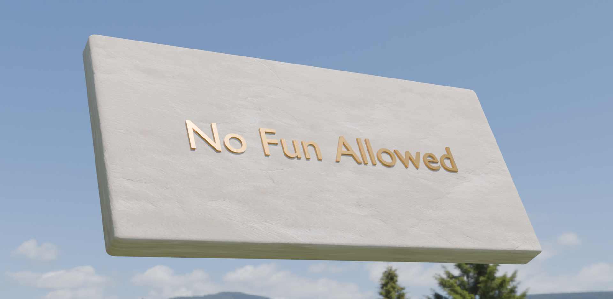
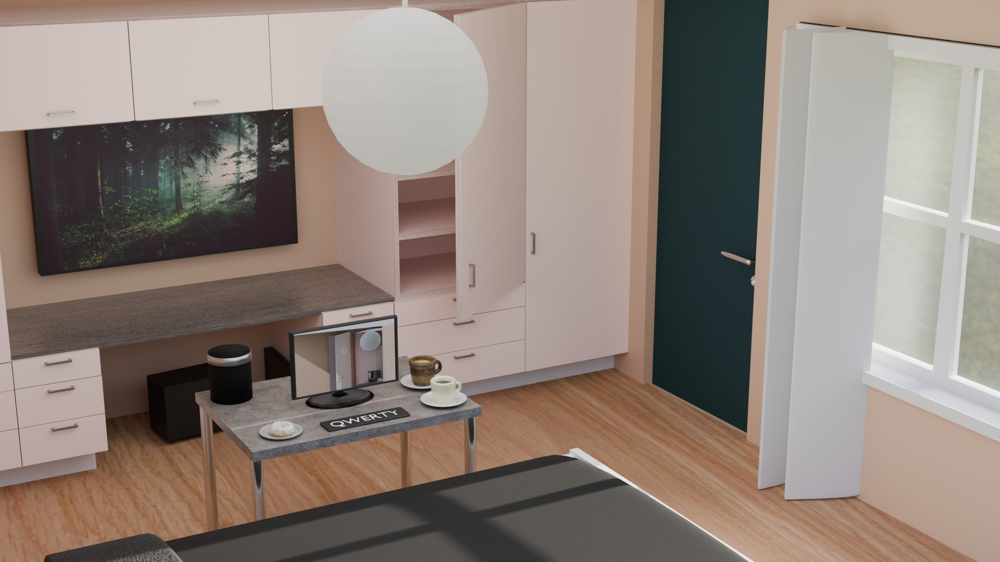
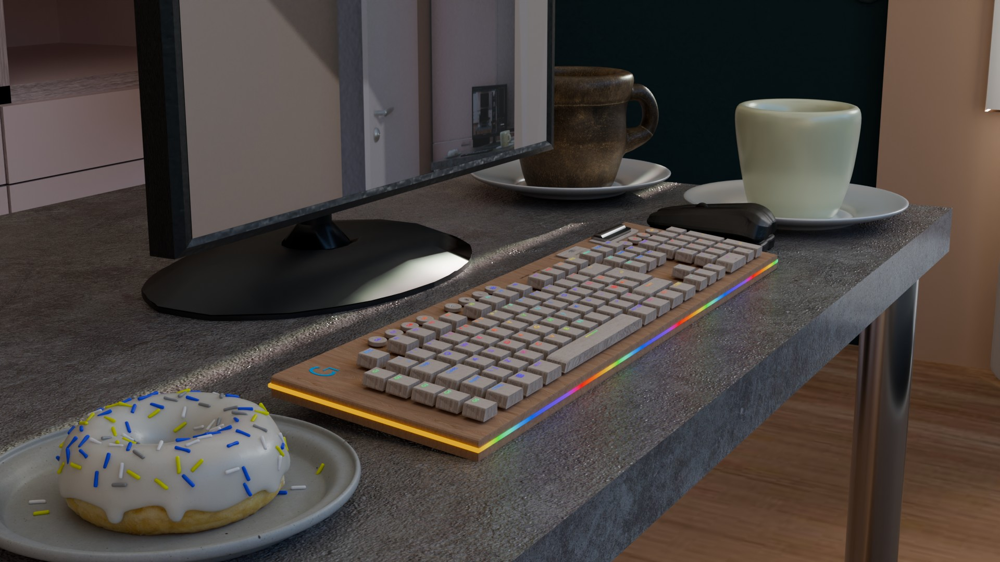
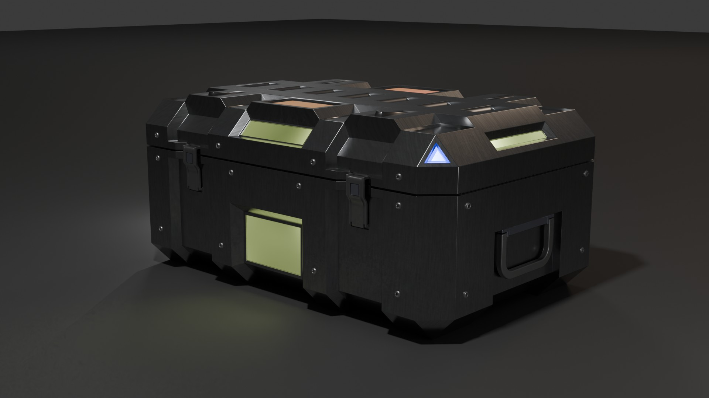
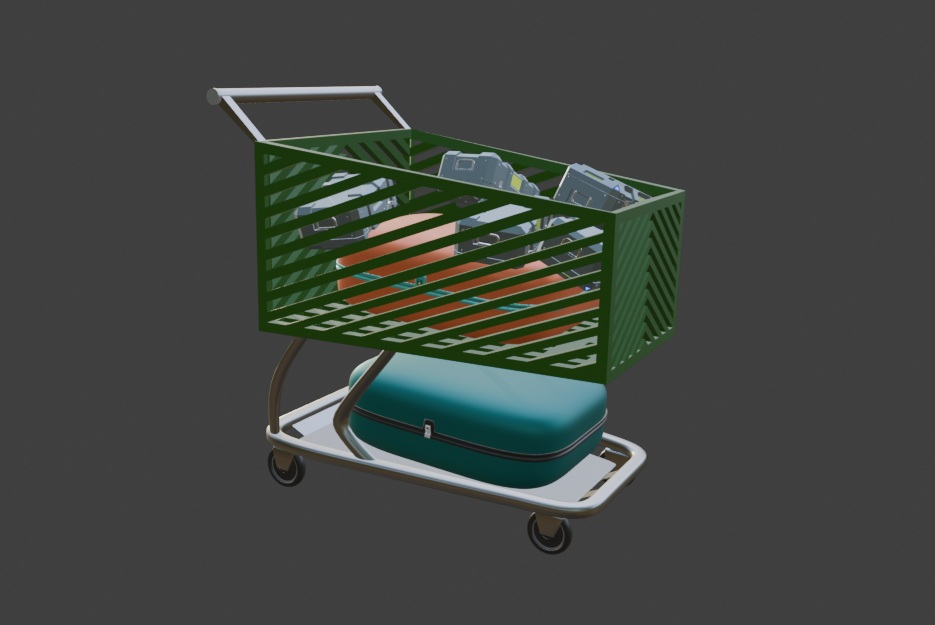
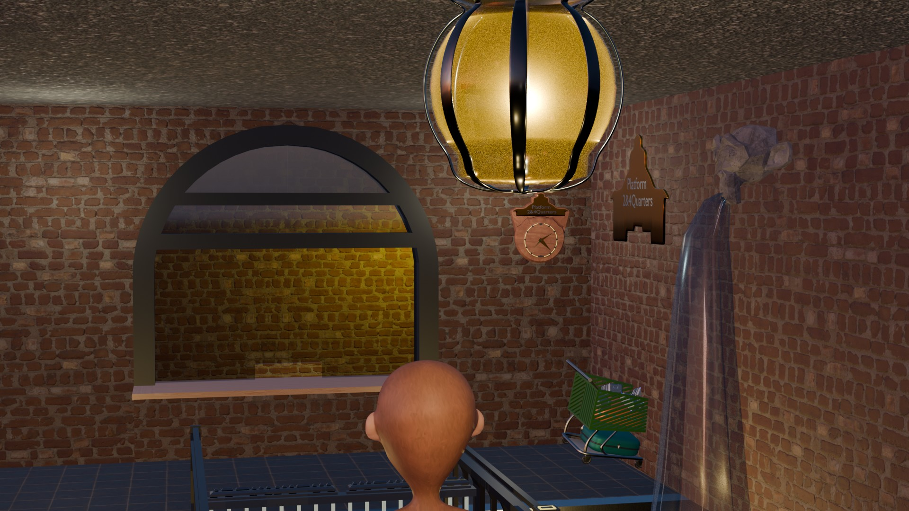
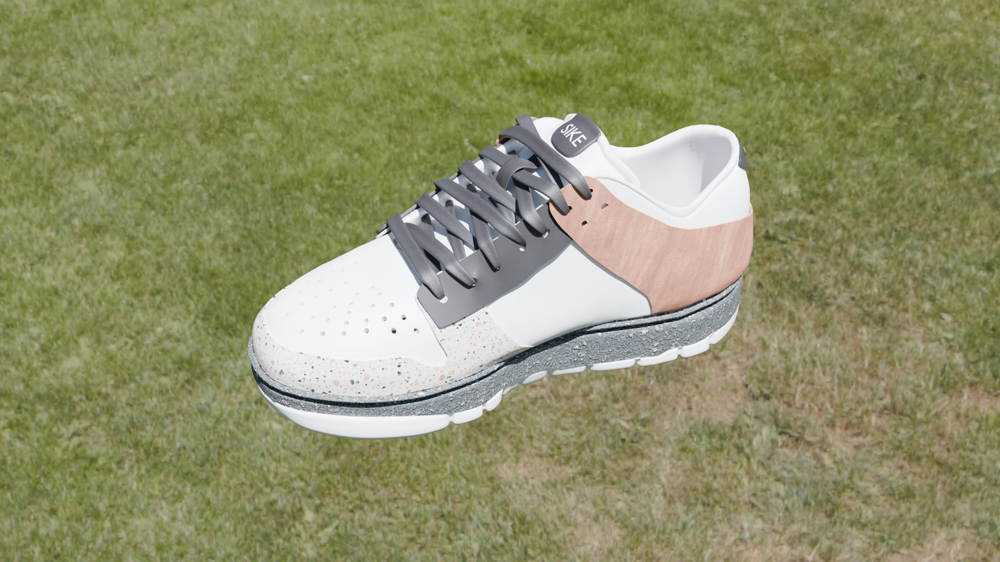

I'm a self-taught developer with over 10 years of professional experience working in dynamic, team-oriented environments.
Most recently, I earned a Blender and Unreal Engine 5 Certification, along with a Certification in Software Engineering with a specialization in Front-End Development from the highly regarded Coding Temple bootcamp. I am also currently working on an Audio Engineering Certification, a Character Design and Animation Certification, along with a more extensive Blender specific Certification.
Throughout my journey, I've consistently met challenges head-on and delivered results. I'm confident in my ability to quickly adapt to any new project and contribute effectively and efficiently. I'm now eager to bring my skills and passion for development to any professional GP, GD, or SE role and master the specific expertise my employer needs most.
Utilized Flask-SQLAlchemy to integrate a MySQL database into an E-commerce API application using built in React Axios API Fetch commands with HTML and CSS.
Designed and created necessary models to represent customers, orders, products, and customer accounts within MySQL and used Flask-Alchemy CRUD operations to integrate tables and data within the project.
Leveraged classes via SQLAlchemy to establish one to many relations between tables for application functionality using class Schema object models.
Ensured proper database connections and interactions for data storage and retrieval using try except blocks to catch for data validation and error handling.
Developed on-site collections that categorize and group API requests according to their functionality for CRUD methods using handle submit functions within form HTML elements.
Created a user-friendly and efficient tool for managing tasks effectively by integrating bootstrap style sheets
Instantiated webpages to simulate a Home page, Search page, and a Search Details page along with About us and Contact info pseudo HTML hyperlinks using bootstrap's Navbar functionality.
Utilized cards, forms, buttons, carousels and Navigation bars for seamless user-friendly interface and design by accessing bootstrap style sheets built in webpage layouts from initial style sheet integration.
Organized webpages using form, option, and div elements along with CSS and bootstrap to create a seamless fun and stress-free viewing experience for users

Fun Zone
Coffee table room build

Here is the first build I have ever created professionally, the doughnut is a series of expertly crafted techniques including blenders multiresolution modifier, scatter on surface modifier, and a few others that I have mastered to create a seamless and visually appealing design. The rest of the scene is a testament to my ability to create functional and aesthetically pleasing pieces that contribute to an overall idea.
Keyboard Build

The keyboard model was much later added and equiped with a fully functional animation control system to simulate an rgb effect. The model was designed after an image found online and shows that I have the expertise to fully create anything I see with careful attention to detail, along with original flare to show skill-sets requiring individuality and personal touch.
Crate Build

The crate build is a demonstration of my skill in creating a variety of different structural applications like emission handling, bevel, inset, and array modeling, along with textural and lighting expertise.
Shopping Cart Build

The shopping cart build is a display of the earlier crate build model, along with the scatter on surface modifier to bring both projects to life with a simple blended idea.
Platform 2&4 Quarters Check-in Scene w/Character model

Further uniting the crate build and the shopping cart build is my Platform 2&4 Quarters scene creation that depicts a somehwat dystopian alternate universe. The name derives from the idea of the scene; where there are 2 platform check-ins each with 2 apartment quarters on the left and right, and a train station in the middle. Here the world is inhabited by monkeys and the train station has been converted into a train station hotel checkin, something similar to that seen in the movie "Harry Potter and the Sorcerer's Stone" where the platform for the hogwarts train station is only accessible by going through a wall.
Character model was much later added to provide a more complete scene idea and to demonstrate my ability to create characters and integrate them into a scene with proper texturing, lighting, and layering.
Scene is meant to portray original thinking and idea generation outside of AI manipulation that is meant to captivate potential masses based on relatable themes.
Shoe Build

This shoe build focuses more on my talent in designing more naturally shaped models with curvature and layering. This build was done after P24QsCheckin and was by all accounts, more difficult with the lacing being the most challenging aspect, providing me with the skills needed to create curved vine like designs upon employer request.
Welcome to my very first full scale game project demo, this game was designed and built by myself using Blender and Unreal Engine 5's node systems, modeling, texturing, layering and physics.
The game is a simple gym environment with a monkey character that can be controlled to jump on platforms and collect points called "banaans" (pronounced: BAH-NANs or BAH-Nahns).
Includes detailed modeling demonstrations as well as one audio track fully created by me.
The game is meant to showcase my ability to create a fun and engaging game experience using Unreal Engine 5's tools and features.
Completed course mastery for Front-End development. including CI/CD(Continous Integration/Continuous Delivery), react, js(javascript), ccs(cascading style sheets), and website deployment(including render and vercel) expertise.
Developed full stack projects utilizing React for the front-end and Flask for the back-end, demonstrating application of coding principles on both sides.
Adapted to new programming concepts and technologies, demonstrating a strong ability to learn and apply knowledge effectively under tight deadlines.
Worked with Coaches collaborating effective and efficient projects using JavaScript, HTML, CSS, Python, React, and TypeScript based coding applications.
Change Of Service/Technical Support Agent, Comcast, Centennial, Co
January, 2017 - February, 2022
Handled customer services ranging from TV, internet, and phones using integrated company specific and general software technologies including Salesforce, Workbench, CSG, and Workday.
Allocated phone networking between phone service providers using Neustar and Salesforce for TN ownership and company validation.
Promoted to the Change of Service position encompassing everything under the scope of Comcast in relation to a customer's technical needs, ranging from changing phone types and adjusting a customer's bill for credits and promotions to disconnecting, moving, and renewing services using integrated and encoded Comcast applications.
Resolution Specialist/Technical Support Agent, Directv, Englewood, Co
May, 2014-July, 2016
Supported customers with installations and performed troubleshooting of technical issues with DirectTV satellite dish units and connectivity to cable service.
Learned various software and information systems used for multiple areas such as billing, technical, upgrades, cancellations, and escalations within the business.
Participated in and led daily group meetings to discuss technical issues within the business and with call etiquette.